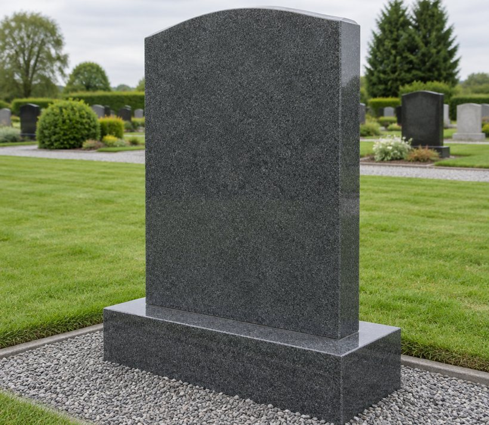
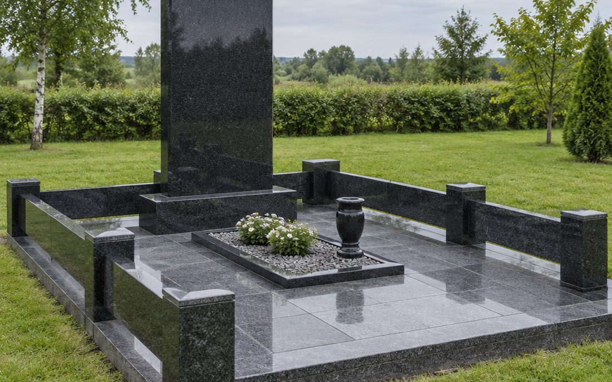
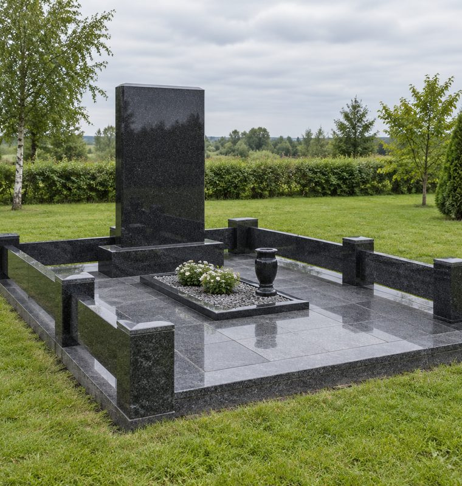
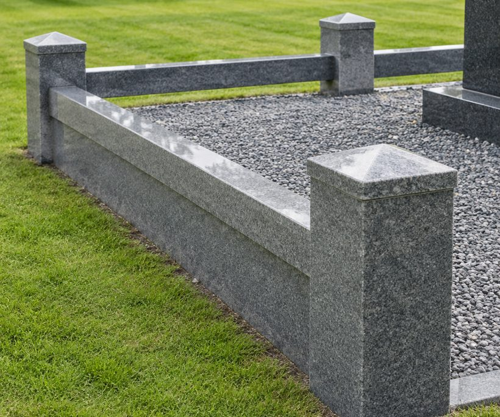
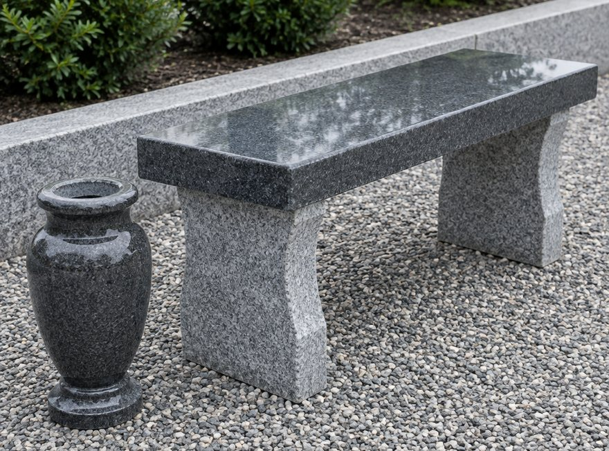
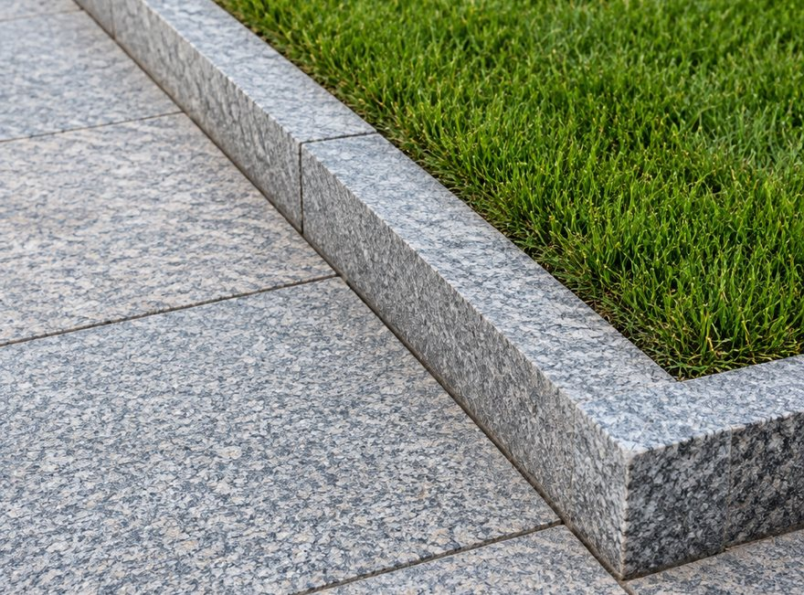
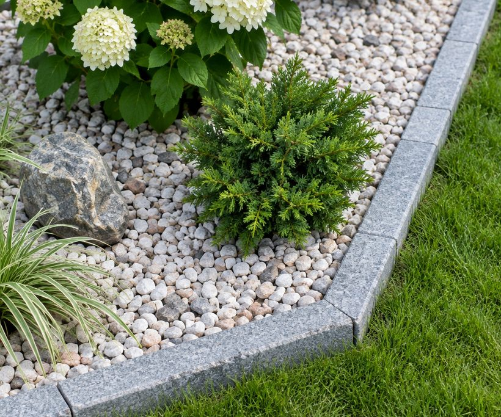
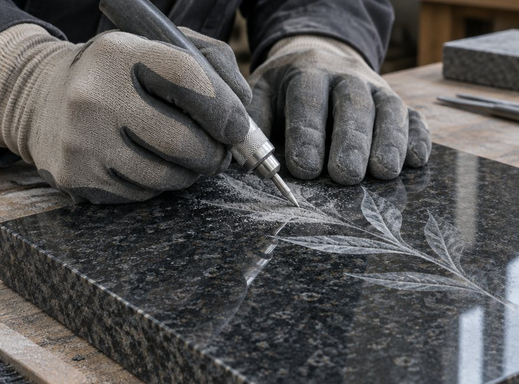
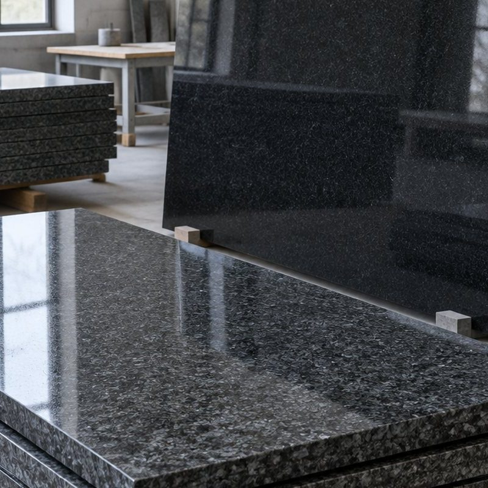

Работы · 02
Формы, камень, благоустройство
Здесь собраны типы работ, с которыми к нам приходят чаще всего. На консультации покажем образцы и объясним, чем один вариант отличается от другого на участке.









Цвет камня на экране отличается от камня на участке. Поэтому образцы показываем вживую: г. Орша, ул. Народная, 5В, Центральный рынок.